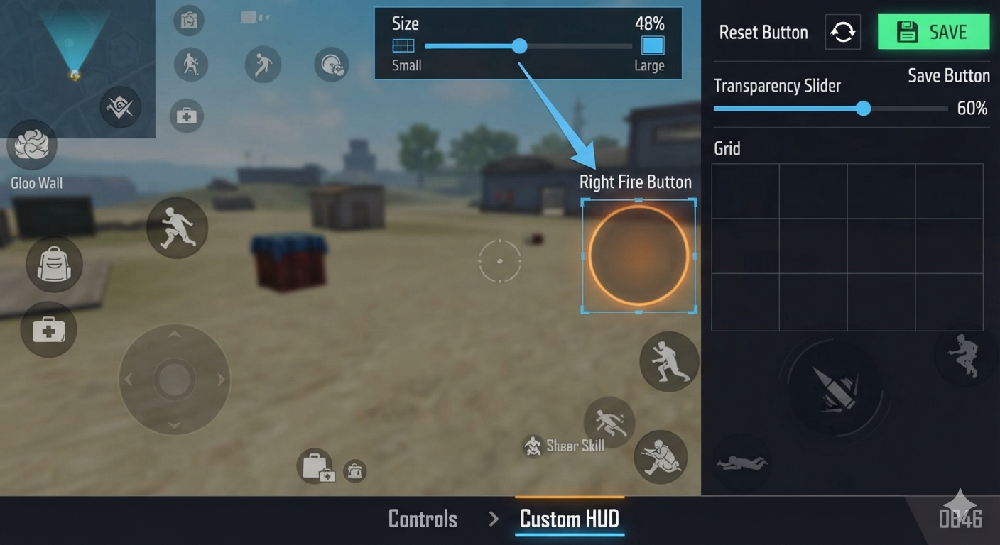
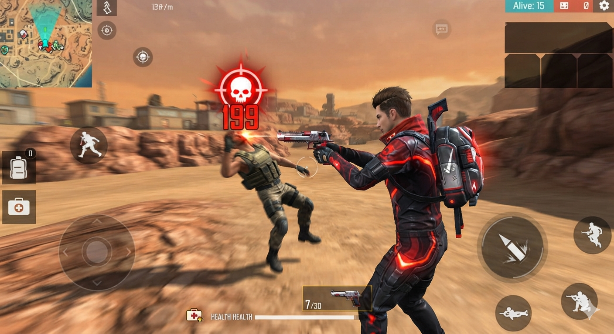
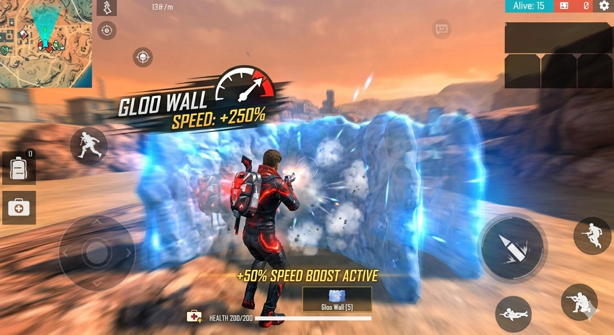

Free Fire has been one of the best games created by GARENA™ in the world, and being a pro player helps you enjoy the game even more. From Battle Royale to one-on-one matches, we will help you improve your chances of winning with simple tricks.
1.CUSTOM HUD & LAYOUT
• Three-finger claw: Move the Jump or Gloo Wall button to the top left. This helps you perform actions such as shooting, moving, and aiming simultaneously.
• Fire button sizing: Keep the right Fire button between 45% and 55% in size. This helps prevent accidental touches and makes dragging more balanced.

2. AIMING & GUNPLAY
• One-tap headshots: Remember to drag the fire button upward in a straight line for long-range shots. Use a "U"-shaped drag for close-range targets.
• Scope-in technique: Quickly tap scope-on, fire, scope-off, and fire again. This resets weapon recoil and helps lock your aim onto your opponent's chest.
• Crosshair placement: Always keep your crosshair at head height while sprinting. Keep your gun at that height instead of pointing it toward the ground.

3. MOVEMENT & DEFENCE
• Gloo wall speed: Crouch immediately before deploying a gloo wall. This helps you place the shield closer to your character for better cover.
• Zig-zag sprinting: Switch weapons rapidly while changing directions. This can disrupt your enemy's aim.
• Weapon switching: Avoid running with a gun in hand. Use the quick weapon-switch button instead.

4. SECRET TIPS
• Invisible Parachute Landing: Turn off your mobile data for exactly two seconds right after hitting the "Eject" button, then turn it back on. Your character may appear frozen in mid-air to enemies, while you instantly spawn on the ground with your loot.
• The Pixel-Peek Glitch: Stand exactly three steps back from a window while searching. You can shoot at enemies outside while remaining hidden from their view on the street.
• Muzzle Flash Camouflage: Equip a silencer on a weapon with a high rate of fire, then fire through a smoke grenade. The smoke can hide the tracer rounds, making it harder for enemies to determine the direction of your shots.
*EXTRA PRO TIPS
•Cook your grenade for one second then cancel it.The sound still plays,making nearby enemies to run out of their cover.
•Medkit animation skip: Tap the slide or crouch button exactly one millisecond before hitting the Medkit.Test it and you will thank me later.
You Need More PRO Tips? 🔥
• Sign up for MOONIFY™ today!
• Experience live lessons from our specialists around the world!